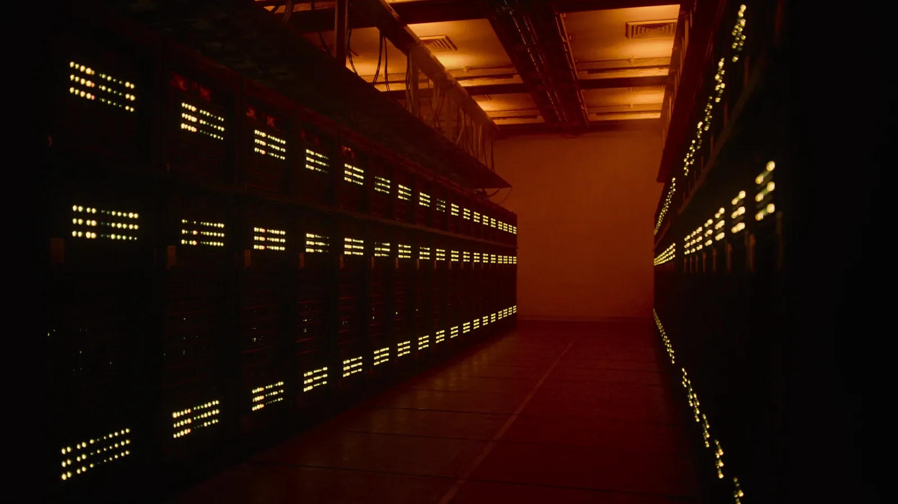
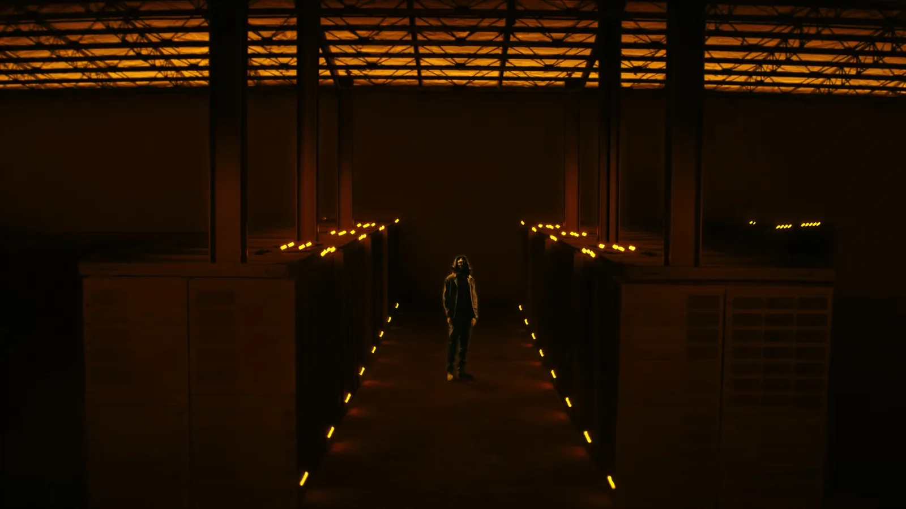
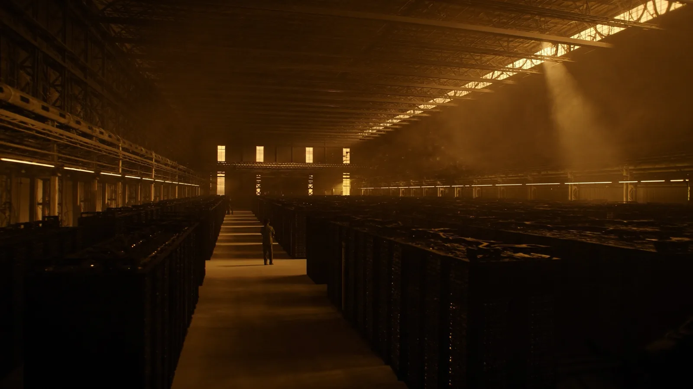
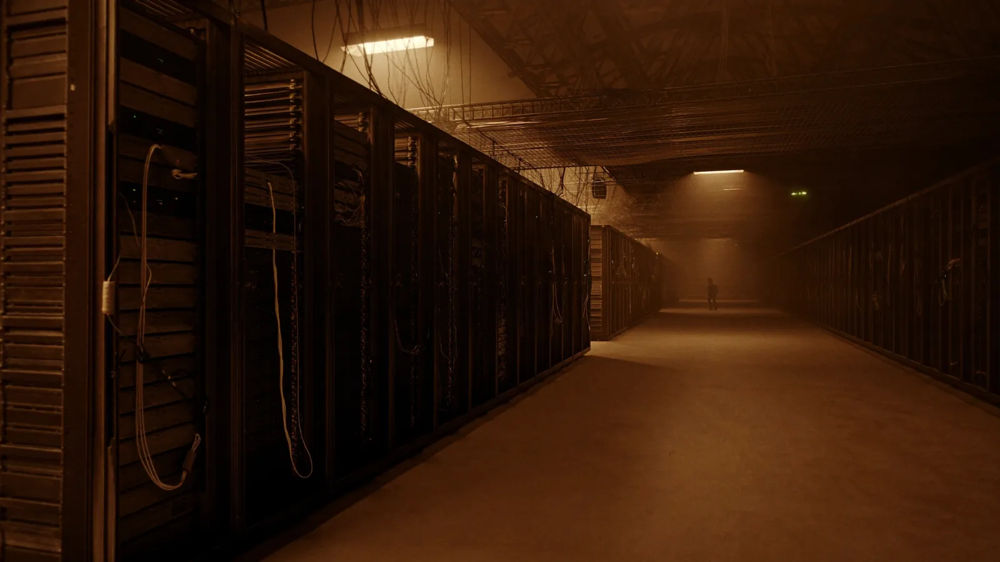
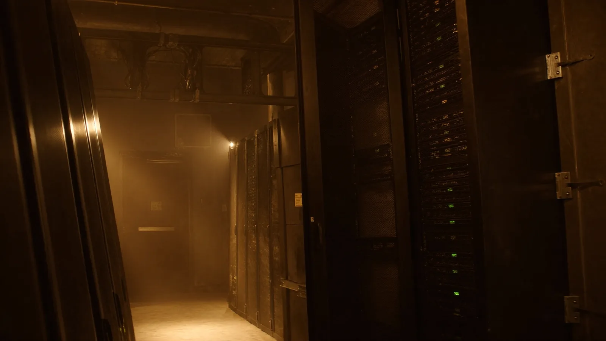
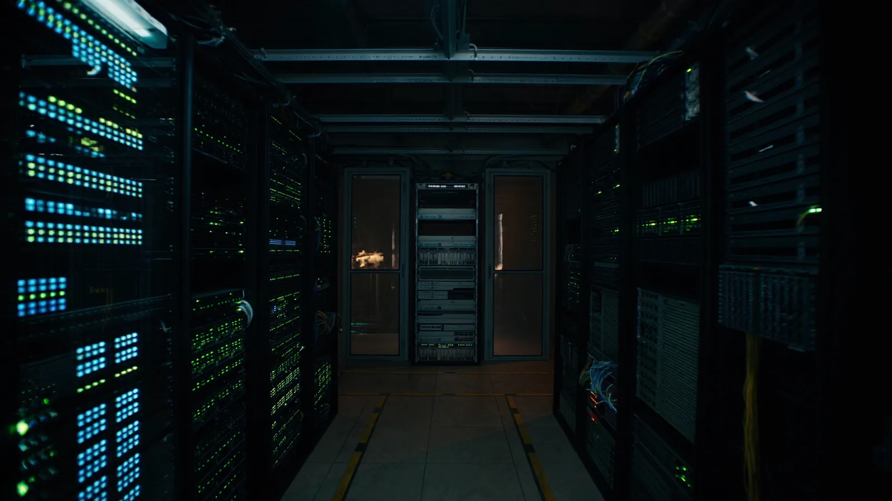
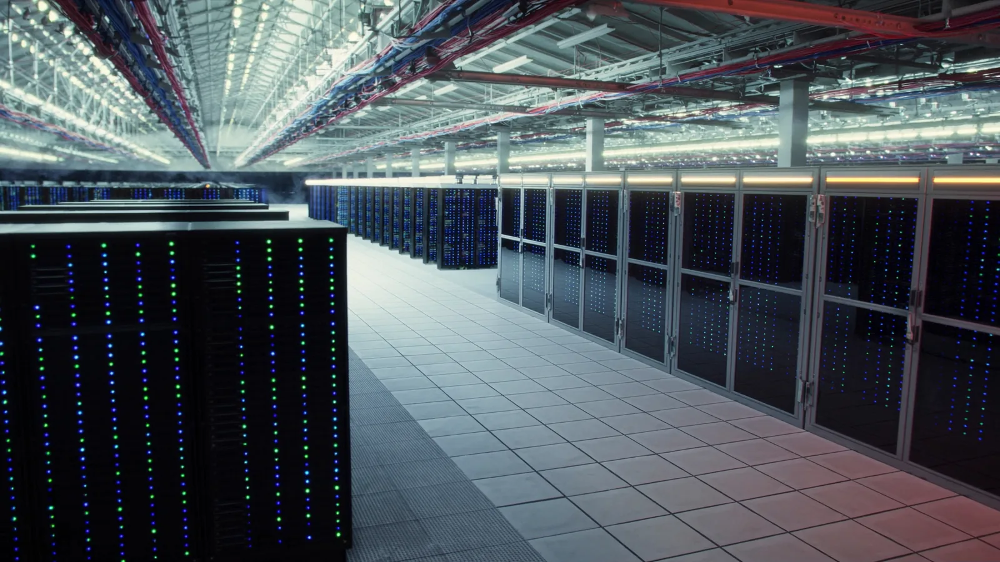

Each one shown where it actually has to work: as the third of the three abutting thirds on
slide 2, beside the steel pour and the aluminum potline, at the same crop and the same
brightness the deck applies. Judging these on their own is what produced the wrong picks — a photograph that is striking alone can still break a band.
← → to move between candidates
6 · Amber wallsCurrently in the deck. Twin walls of black cabinets with rows of amber indicator lights running their length, warm glow at the far end. The cabinets stay black — a data centre is black boxes — and the lighting is what matches the band.

Steel18% imported
Primary Aluminum85% imported
Data Centers60% steel
7 · Amber aisleSame idea, wider and quieter: black cabinets, amber LED runs, a figure in the aisle for scale. Reads as one aisle rather than two walls, so slightly less dense at strip size.

Steel18% imported
Primary Aluminum85% imported
Data Centers60% steel
1 · ClerestoryWarm gold light through high windows, rows receding to a far wall, a figure for scale. Tonally close to the band, but Alex’s objection lands: the sepia wash makes it read as rust, not as a data centre.

Steel18% imported
Primary Aluminum85% imported
Data Centers60% steel
2 · Warm aisleAmber light pooling down a central aisle, rack faces and cabling visible. Warm like 1 but reads more explicitly as equipment rather than rows of dark mass.

Steel18% imported
Primary Aluminum85% imported
Data Centers60% steel
3 · Rack facesThree-quarter view, tungsten light on the cabinet faces. Reads well full-size, but at strip scale it collapses into amber haze and dark shapes — the least legible of the three warm frames, not the most, which is the opposite of what it promised.

Steel18% imported
Primary Aluminum85% imported
Data Centers60% steel
4 · Cold aisleThe version that shipped this morning. Unmistakably a data centre — dense LED banks either side — but the only cool frame in a warm band, which is the objection that started this.

Steel18% imported
Primary Aluminum85% imported
Data Centers60% steel
5 · ElevatedHighest rack density of the five and the clearest at a glance — and the worst fit. White floor and blue cast punch a hole in the band.

Steel18% imported
Primary Aluminum85% imported
Data Centers60% steel
The trade-off was tone against legibility — the warmer the frame, the less obviously
it said "server racks" — and 1–5 all sat somewhere on that line. 6 and 7 get off it:
keep the cabinets black, and make only the lights warm. A data centre is a lot of black
boxes; the fix was never to warm the boxes up until they looked like rust, it was to match the
band on light instead of on hue.
6 is in the deck now, with 7 as the runner-up. Of the original five: 2 was where I landed — warm enough to belong beside the potline, with enough rack
face and cabling to be read correctly at the size it actually runs. 1 is the alternative: the
best tonal match of the five and the better frame if the band reading as one image matters more
than the panel reading on its own. 3 I would drop — it looked promising full-size and did
not survive the crop.
All five are generated, so none carries a licence. Whichever you pick ships as
gap-datacenter-<name>.webp — a new filename, so returning viewers
don't get a cached older frame. Say the number.